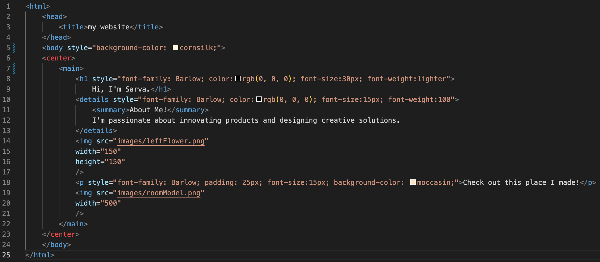

Auriea Harvey and the Future of Digital Sculpture.
from
Web1 to Web3.It is often difficult to claim sovereignty of purely digital art as nowadays these forms are not appreciated as much due to the assertion that the machines and computers are predominantly responsible for the overall execution of these pieces. However, the labor that is often executed as a mere means to an end, deserves a lot more respect and recognition in terms of its potential. With a future that “never ages” thanks to this technology, digital art allows us to tell stories in a moment of time, where it continues to be shaped as consumers interact with the content.
My code for my main sarva.kom site is as follows:
